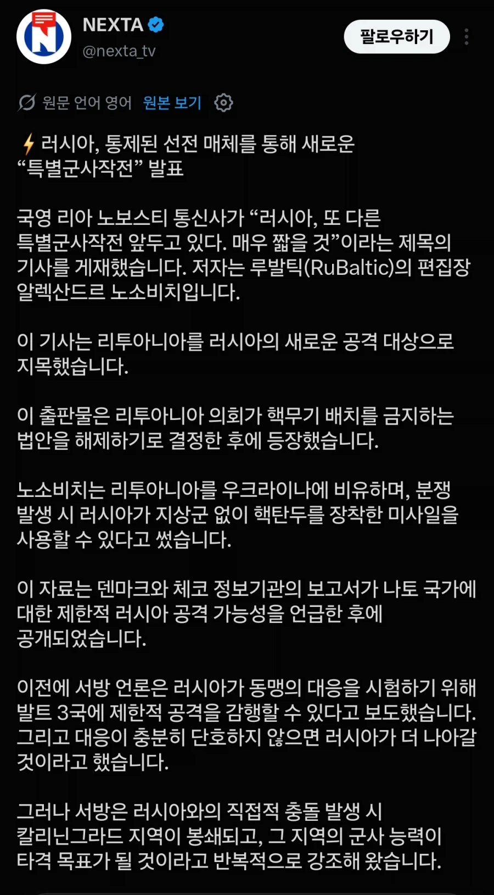
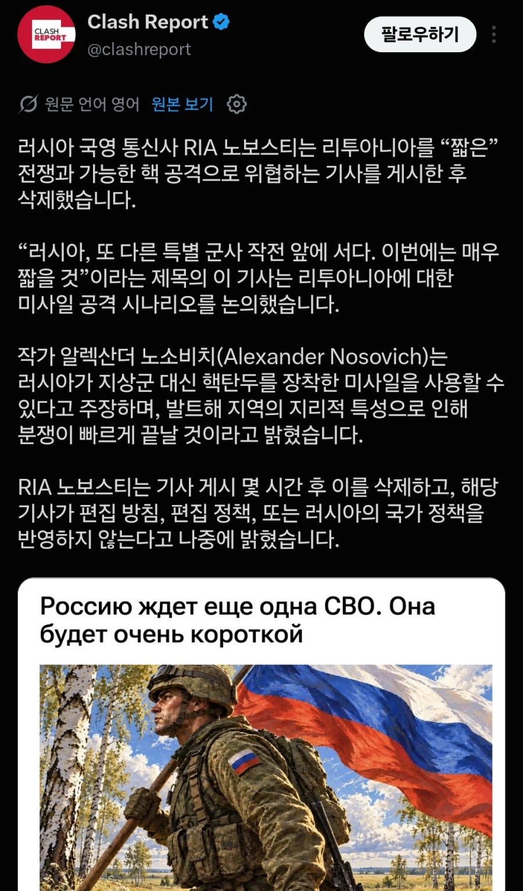

덴마크와 체코 그리고 폴란드에서 지난 몇 달에 걸쳐,
러시아가 리투아니아 수바우키 회랑을 노릴 준비를 하고 있단 소리가
지속적으로 나오고 있지.


덴마크와 체코 그리고 폴란드에서 지난 몇 달에 걸쳐,
러시아가 리투아니아 수바우키 회랑을 노릴 준비를 하고 있단 소리가
지속적으로 나오고 있지.
핵...?
언질만 준거 같은데 물량공세만 할듯
진짜 핵뿌리면 다 핵 만들고 죽창메타 들어가지
러시아 체급이 되냐? 이빨 빠진 호랑이 된거 아니었음?
푸틴은 지금 나라면 할 수 있다 라는 생각임
리투아니아는 우크라이나처럼 물량공세 막아낼 인구가 없음
이기려고 하는 전쟁이 아님
됨. 리투아니아 정도는 가능함. 리투아니아 전략이 최대한 시간 끌어서 nato가 들어오길 바래야하는데, nato대장이 미국이라. 오히려 푸틴이 트럼프 바라보고 중간선거 전에 침공할 수 있음. 그럼 트럼프는 당연히 아무것도 안할거고 리투아니아가 넘어갈 수도 있음. 리투아니아가 될지 에스토니아가 될지 라트비아가 될지 몰라도. 트럼프가 하도 병신이라 지금이 기회다 하고 침공하고 빨리 점령해서 우크라도 nato랑 같이 딜칠 수 있음.
러시아 막으려면 공군력이 있어야하는데 발트3국은 공군을 운용하는 나라가 아님.
그래서 발트3국 막으려면 영프독폴에서 공군으로 러시아 저지해줘야 하는데 그럼 얘네들 힘빠져서 러시아 협상력이 올라가겠지. 어짜피 러시아는 북한에서 병사들 수급해서 계속 버릴거니까 러시아랑 북한은 사람 목숨값이 파리랑 똑같으니까
또 특별군사작전이면 불가능이고
총력전이라면 가능할것 같음
노환으로 죽기전에 화려하게 터뜨리고 싶은가부지
궁금하기도 하고 탄두들 아깝기도 하고 그런가봄

아 이새끼들 불안하게 왜지랄이지
국경인근 군사배치랑 주민 대비 소식 나오는거 아닌이상은 때가 아닐거라고 생각해
전쟁을 수행할 능력이 되나?...
그것보다는 전쟁을 끝낸이후 후폭풍을 못견디는건가?
미장 오르는거 보니 좆도아닌듯
러시아가 유럽과의 전쟁이 일어난다면 그건 매우 짧을것이라고 말했고 그 의미는 핵전쟁을 의미함.
오 이번에도 짧아 ? 10년쯤 하려나